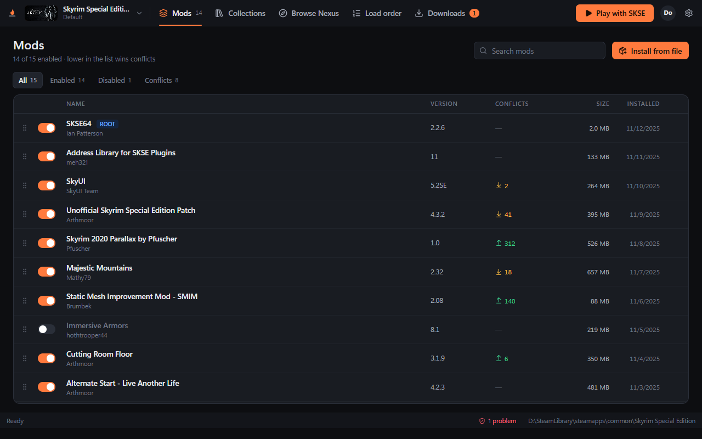
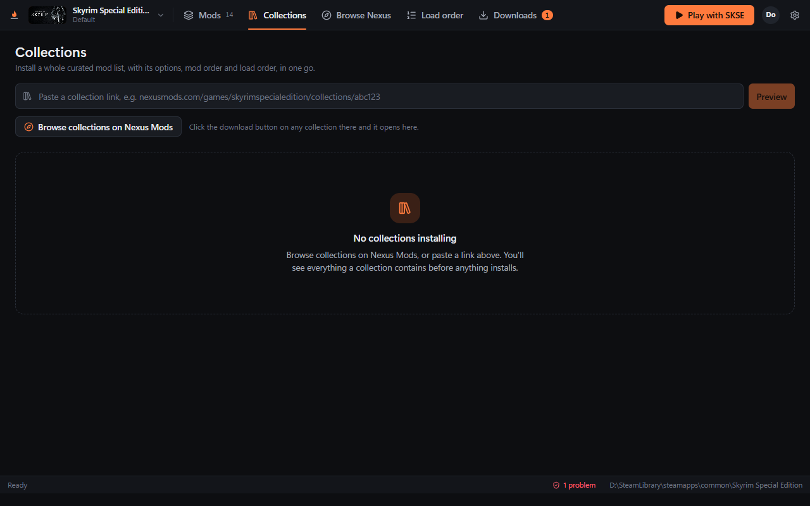
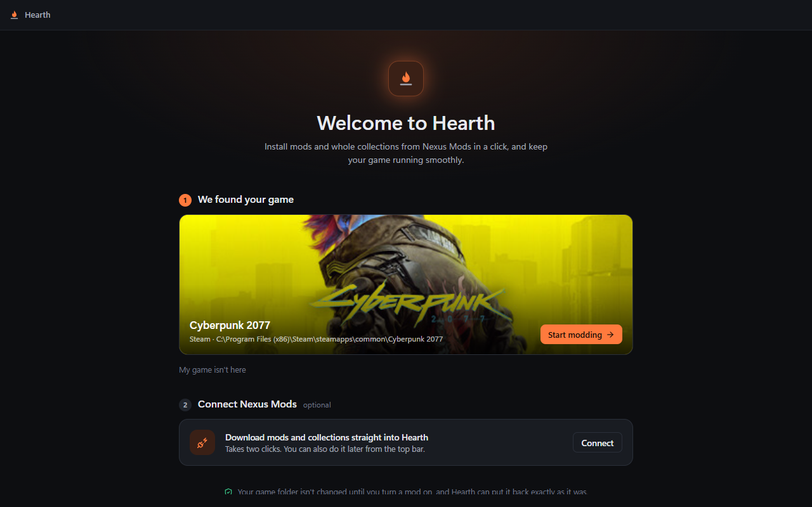
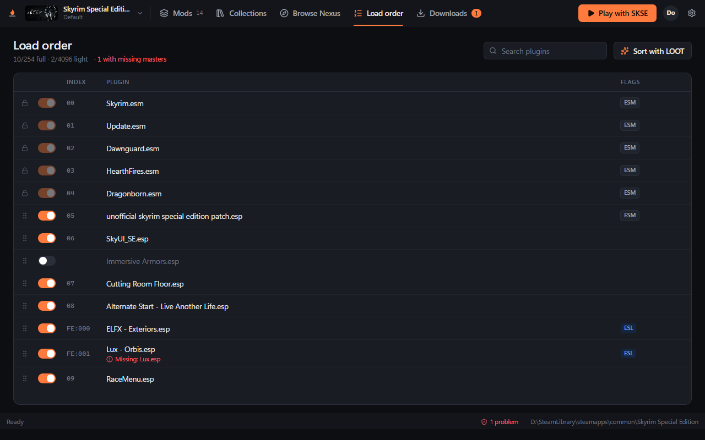
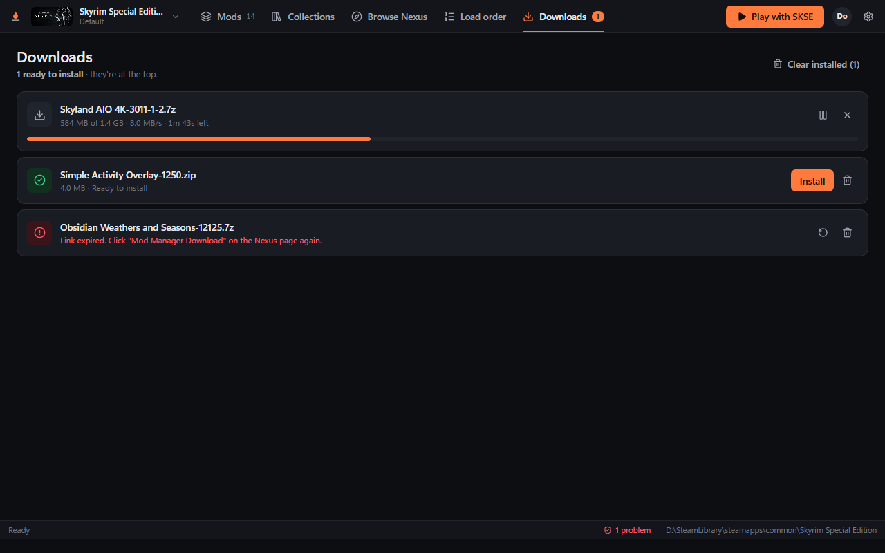
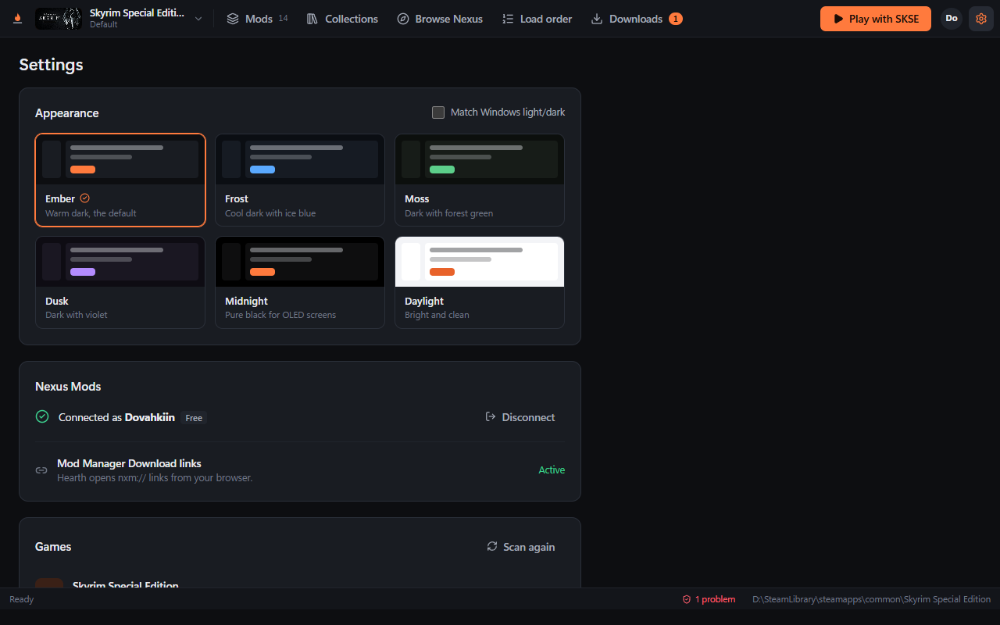

One-click collections
Preview a collection, pick optional mods, and follow installation progress in Hearth.
Windows mod manager
Browse Nexus Mods, install collections, and manage your load order from one app.

Preview a collection, pick optional mods, and follow installation progress in Hearth.
Browse mod pages and start Mod Manager Downloads inside the app.
Deploy without duplicating files on the same drive. Originals are backed up and restored when you purge.
See which mods need a missing plugin, runtime, or framework, with a suggested fix.
Sort Bethesda plugins with LOOT and manage active Baldur’s Gate 3 packages in the Public profile.
Hearth places common archives, script mods, and framework files in the folders Cyberpunk expects, and shows which archives win.
See newer versions of your mods and update in a click. Mods from a collection are protected, because the collection was tested with their current version.

Manage downloads, choose a theme, and start from a detected game. These screens use sample data.




Free for Windows 10 and 11. Download Hearth_<version>_x64-setup.exe from the latest release and run it. After that, Hearth keeps itself up to date: when a new version is ready, it shows Restart to update. Every update is signed, and each release includes its source code.